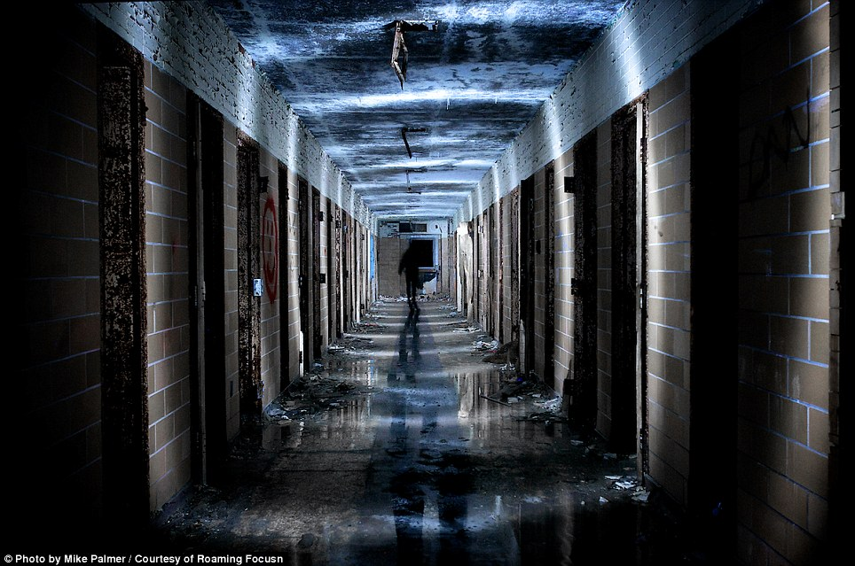

Up stairs, second floor
After you go up all the stairs in the second floor, the stairs suddenly all fall out. There is no way back now. When you turn yourself back, you reliazed there's a shadow at the end of the hallway. You were shocked and nearly scream for help, until you then reliaze that the shadow is only yourself. After a few tries on each door of the hallway, you've found that all the doors are either locked or heavliy damage. However, only two doors were be able to open. A one with a spooky smiley face painted in bloodly red, and another one with nothing painted on it. Which door will you choose? 